淨新洗衣 — CMS 系統功能總覽
為老闆娘設計的全業務管理工具，從建單、派工、薪資到回繳都一站搞定
整體痛點對應表 5 分鐘了解全貌
下表把您原本最花時間的事，跟系統現在怎麼處理一條條對應。
| 日常事務 | 以前怎麼做 | 現在系統怎麼做 |
|---|---|---|
| 客戶來電查歷史 | 翻 Excel 用 Ctrl+F 找電話、找到了還要再找對應的服務紀錄 | 按 Ctrl+K 任何頁面打名字/電話/編號就跳出客戶卡，連最近訂單一起秀 |
| 客戶介紹親友 | 寫在備註欄文字「王大明介紹」，沒辦法回頭算王大明總共介紹幾個人 | 填「介紹人」欄位，自動產生「介紹效益榜」+ 個人頁顯示「介紹過 N 位、貢獻 NT$X」 |
| 多地址多機器 | 同一個王大明三個地方都有機器，紀錄分散、容易搞錯哪台在哪 | 客戶下可建多地址、每台機器指定地址，建單選機器會自動帶地址 |
| 一通電話多地址預約 | 輸入 3 次客戶資料建 3 張單，過程被打斷就出包 | 建好第一筆後出現「同客戶再建一筆」按鈕，客戶+日期自動帶 |
| 派工給師傅 | 老闆娘 LINE 通知或紙條交班，常忘記、撞時間 | 月曆拖曳派工，每位師傅獨立顏色，按 × 可一鍵回到待派工 |
| 計件薪資結算 | 月底拿 Excel 一筆筆加，加大、折扣、轉帳要分欄計 | 系統自動算每位師傅本月應發 + 加減項 + 積分 + 待回繳，一頁看完 |
| 師傅交回現金對帳 | 紙袋裝錢、紙條寫金額，對不上時就要回頭翻訂單 | 待回繳頁逐筆顯示，可勾選確認、單筆標記或全部標記，金額即時加總 |
| 到期 1 年的客戶要主動聯繫 | 月底翻紀錄找出 11-12 個月前服務的客戶，名單常漏 | 「即將到期」頁自動列出名單，一鍵複製 LINE 訊息模板，貼給客戶就好 |
| 追蹤師傅 KPI | 沒有具體指標，靠主觀判斷 | 促銷積分系統（FB 按讚/Google 5 星等）每月達標可給獎金，進度條一目了然 |
| 看本月營業狀況 | 月底匯總 Excel 做總表 | 儀表板即時顯示本月營業額、案件數、取消率、待回繳、師傅案量 |
功能目錄
1. 登入畫面
系統要登入才能用，每個人都有自己的帳號跟權限（老闆娘 = owner、管理員 = manager、師傅 = technician）。
- 老闆娘：可以看全部、改全部、管帳號
- 管理員：建單、改單、派工，但不能管帳號
- 師傅：只看自己今日案件、收費、完成（用手機）
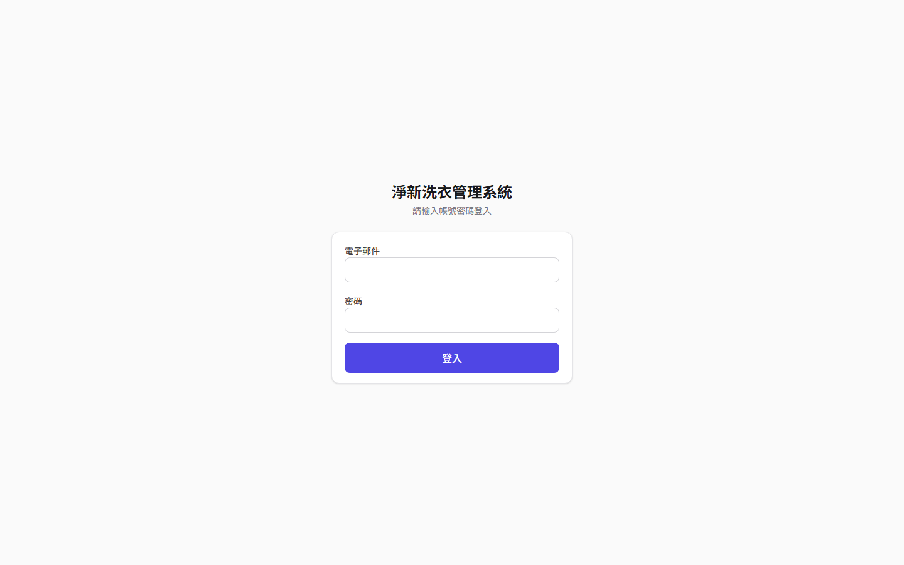
新來的師傅小李，您只要在「設定 → 帳號管理」幫他建一個帳號（預設密碼 admin1234），他用手機登入後就能看到您派給他的訂單，不會看到其他師傅的資料。
2. 儀表板
登入後首頁，本月關鍵指標一目了然：
- 本月營業額（自動比較上月增減 %）
- 本月案件數
- 今日待完成（連結到月曆）
- 即將到期客戶數（連結到提醒清單）
- 本月取消率（≥20% 會變紅警示）
- 師傅本月案量直條圖（綠 = 已完成、黃 = 待完成，可點跳月曆）
- 歷史消費前 30 名客戶（VIP 名單）
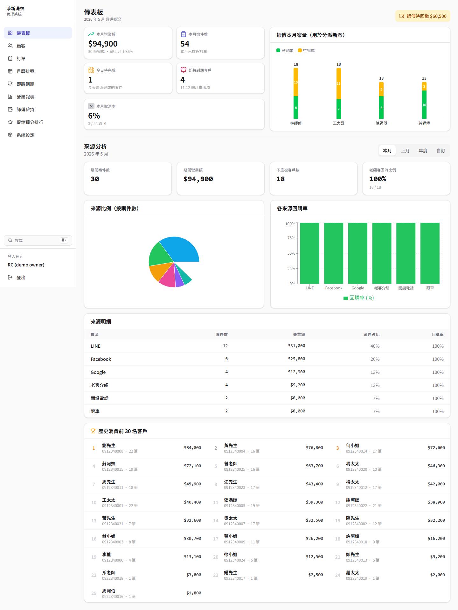
每天早上開電腦第一眼，您就知道「今天還有 8 筆要做、本月已收 NT$ 65,200、比上月多 12%、A 師傅 22 件最多、B 師傅 8 件最少」，要不要加派人手、要不要催沒回的客戶一目了然。
3. 全域搜尋 Ctrl + K
系統任何頁面，按 Ctrl + K（或左上點搜尋圖示）就跳出搜尋框，打：
- 客戶姓名、電話、編號
- 地址、縣市鄉鎮
- 訂單編號、訂單備註
都能立即找到並跳到對應頁面。
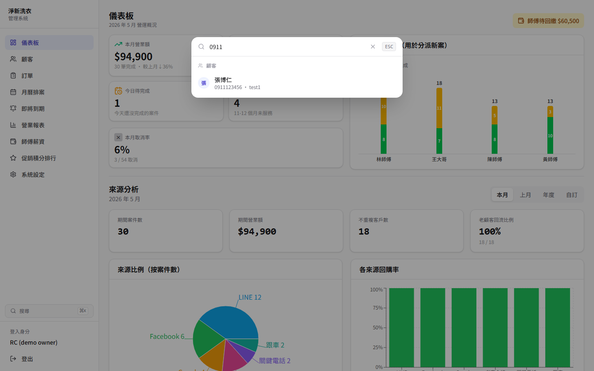
客戶來電：「我上次清的洗衣機是 5 月幾號？」
您按 Ctrl+K，打對方電話「0911」，1 秒內看到該客戶 + 最近訂單，點進去看完工日期。整個流程不到 10 秒。
4. 客戶管理
客戶清單頁面，能：
- 按姓名/電話/編號/備註模糊搜尋
- 按縣市、鄉鎮篩選
- 看頂部 KPI：總客戶數、本月活躍、即將到期
- 看「🏆 介紹效益榜」前 5 名（誰介紹來的客戶最有貢獻）
- 匯出 CSV
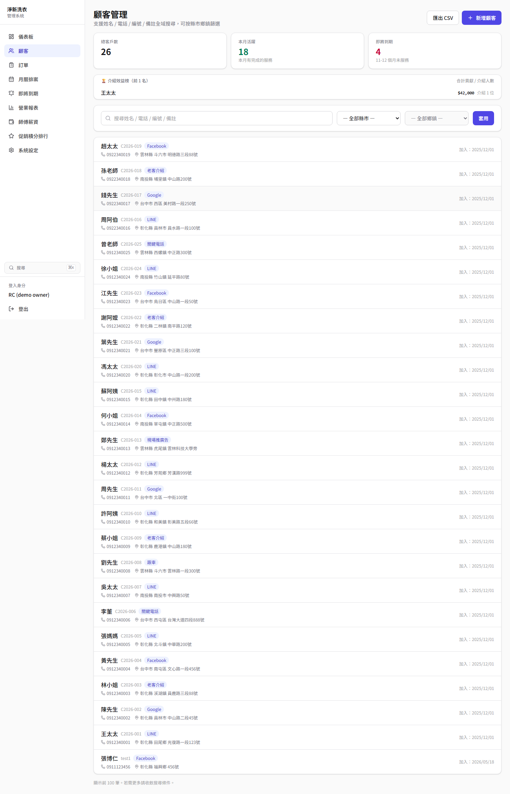
王大明介紹了 3 個朋友來，這 3 個人總共消費 NT$ 12,500。系統自動算出來放在介紹榜，您一眼看到「王大明貢獻最高」，下次他來時可以送個小禮表達感謝，創造更多介紹。
5. 客戶詳細
點任一客戶進去，看到：
- 姓名、編號、來源 tag、可點撥的電話
- 「由 XXX 介紹 →」chip（如果有介紹人）
- 4 個 KPI 卡：累計消費、距上次服務、平均週期、臨時取消次數（≥3 次變紅警示）
- 客戶備註 + 地址清單 + 機器清單（機器按地址分組）
- 「介紹過的客戶」列表（如果這位客戶介紹過別人）
- 完整服務歷史（每筆可展開看明細）
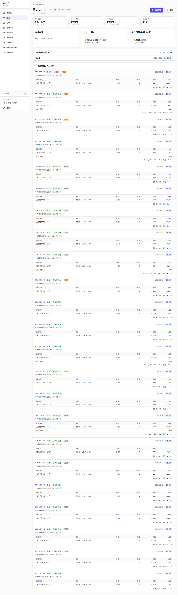
王大明自家 1 台 LG 洗衣機、公司 1 台 Daikin 冷氣、媽媽家 1 台國際洗衣機。系統按地址分組顯示，您不用再問「他公司那台是什麼牌子？」
建新訂單時選了「國際洗衣機（媽媽家）」，地址欄會自動跳成媽媽家。
5.1 新增/編輯客戶
表單包含：
- 基本資料（姓名、電話、編號、來源、加入日期、介紹人、備註）
- 「介紹人」用打字搜尋下拉，不用滾整個客戶清單
- 可加多個地址（每個可標籤如「家」「公司」「媽媽家」）
- 可加多台機器，當客戶有 2 個以上地址時，每台機器可選歸屬地址
- 地址新增當下自動偵測同址重複（如果有人已在同地址登記）
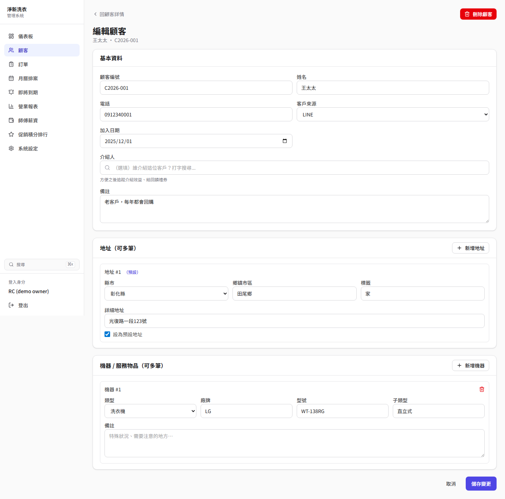
6. 訂單管理
所有訂單一覽，支援多重篩選：
- 狀態 tab：全部 / 待派工 / 已排案 / 已完成 / 已取消
- 關鍵字搜尋：訂單編號、備註
- 收款方式：未收、現金、匯款、刷卡、LINE Pay
- 回繳狀態：待回繳、已回繳、免回繳
- 師傅：依清洗師傅篩選（新功能）
頂部 3 卡 KPI：篩選結果筆數、總金額、已完成金額/件數

6.1 依師傅篩選 — 操作視角 vs 財務視角
當您選擇某位師傅時，上方出現提示橫條，可直接跳到該師傅本月薪資頁。
兩頁分工：
| 頁面 | 看什麼 | 什麼時候用 |
|---|---|---|
| 訂單管理 + 師傅篩選 | 該師傅每一筆訂單（客戶、狀態、金額） | 找特定訂單、改派、檢查還沒做的 |
| 師傅薪資 | 該師傅本月總計、加減項、積分、待回繳 | 月底結算薪水、看 KPI |
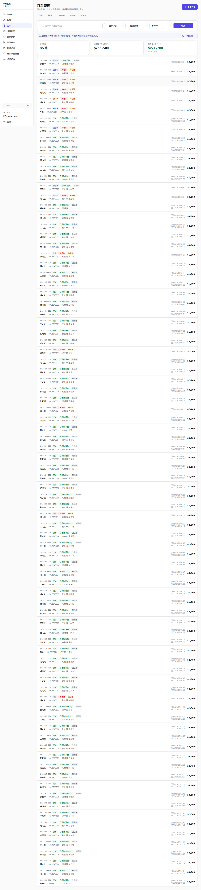
7. 訂單詳細 + 客戶 side panel
點任一訂單進去，看到：
- 左 2/3：訂單編號、狀態 chip、服務明細、加減項、總計、備註、師傅現場備註、促銷積分
- 右 1/3（lg+ 寬螢幕）客戶 side panel：客戶基本資訊、累計消費/平均週期、機器清單、最近 5 筆訂單（不含本筆）
side panel 在捲動時固定（sticky），您看訂單細節時隨時能對照客戶背景。
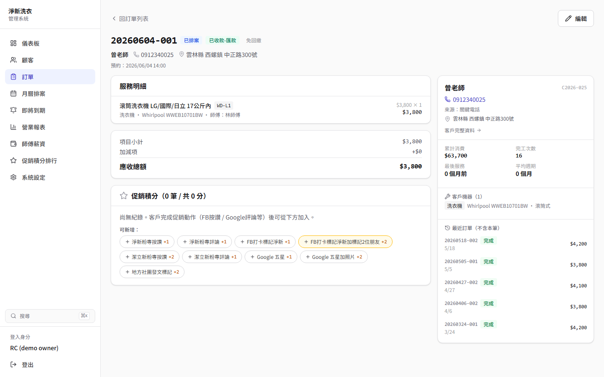
師傅完工回報這位客戶機器轉軸異常，您看完場服務備註後，馬上能看到右側 panel「這位客戶平均週期 8 個月、共做 5 次」，當下評估是否要主動建議客戶提早預約下次清洗。
8. 新增訂單
建單表單包含：
- 選客戶（會自動帶出他的地址、機器清單）
- 預約開始時間（日期 + 24h 小時 + 分鐘下拉，告別瀏覽器的「上午/下午」選擇器）
- 預計時長（60/90/120/180 快捷）
- 多項服務明細，每項可：選機器、選師傅、改單價、加代號、加備註
- 多項加減項（加大、折扣、其他自訂）
- 選了機器若機器有歸屬地址，自動帶地址；不一致時跳警示「⚠ 此機器在另一地址」可一鍵切換
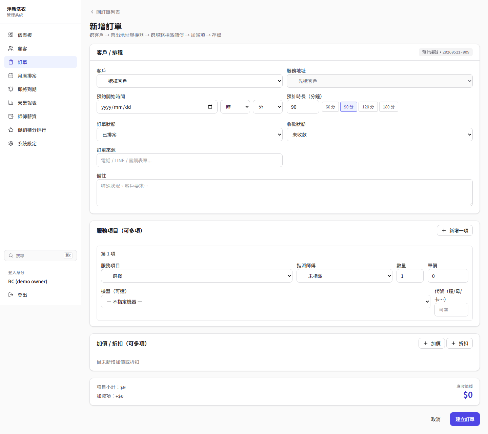
王大明來電：「禮拜六 9 點員林家、11 點公司、下午 2 點田尾媽媽家都要洗」
您建好第一筆（員林家 9 點）後，訂單詳細頁頂部跳出「同客戶再建一筆」按鈕。按下去 → 新建訂單頁的客戶 + 日期已預填，您只要選下個地址、機器、調整時間。3 筆訂單從輸入 3 次客戶資料變成輸入 1 次 + 微調 2 次。
9. 月曆排案
左側「待派工」面板，右側月曆。功能：
- 拖曳待派工卡片到月曆某天 → 自動派給目前 tab 的師傅、設為已排案
- 每位師傅獨立顏色，可切 tab 看單一師傅的排程
- 每天日期格右下顯示當日營業總額
- 滑鼠移到事件上有 tooltip 顯示完整資訊（訂單編號、客戶、地址、服務、應收）
- 事件右上 × 按鈕：不直接刪除，跳出選單可選「↩ 回到待派工」或「✕ 取消訂單（要填原因）」
- 已排案事件可再拖曳改日期
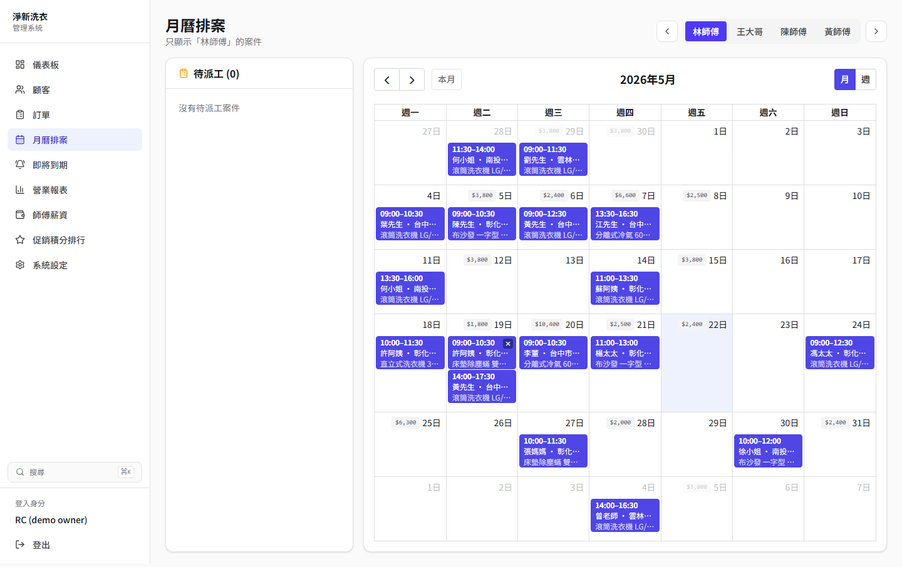
排好的 A 師傅週六 10 點的單，發現該客戶比較適合 B 師傅。
以前要進去訂單頁編輯。現在直接月曆上點 × → 選「回到待派工」→ 切到 B 師傅 tab → 拖回月曆同一天。3 步搞定，不用進入編輯頁。
10. 師傅薪資列表
取代您原本 Excel 計件薪資表。本頁顯示：
- 頂部 4 卡 KPI：本月總應發、待回繳現金、積分達標師傅數、平均積分
- 每位師傅一張大卡：本月應發大字、接案件數、加減項說明、積分 KPI 進度條（達標綠/未達黃）、待回繳警示橫條（橙色，金額 + 筆數）
- 「✓ 已達標」chip — 積分達到 KPI 時顯示
- 未達標時：「⚠ 還差 N 點，本月剩 M 天」即時提醒
- 月份切換看歷史
- 獎金預留欄位（待您決定獎金政策）
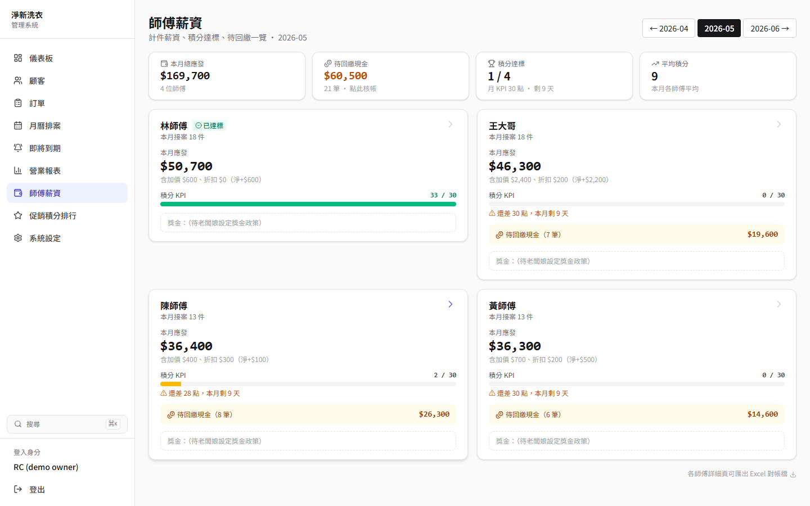
每位師傅一張工作表，手動加總每天計件、加大、其他、折扣，再扣轉帳，最後核對現金回繳，每月要花半天到一天時間，常算錯要重來。
進系統 5 秒鐘看完所有師傅本月應發 + KPI + 待回繳。月底結算只要按「全部標記已回繳」確認現金到手即可，0 計算錯誤。
11. 師傅薪資詳細
點任一師傅卡進去，看到：
- Hero：本月實領大字（已含加減項）+ 接案件數
- 4 個 KPI 卡：基本計件、加減項淨額、積分達標、待回繳
- 積分 KPI 進度區：進度條 + 達標 chip + 促銷類型分布 + 可展開的本月積分明細（每筆連到對應訂單）
- 獎金預留卡（dashed border）
- 待回繳訂單區：未交回現金的訂單清單 + 一鍵跳「待回繳對帳」
- 每日明細（折疊式）：點某天展開看當天每筆訂單、收款方式、金額
- 右上「看這位師傅所有訂單」連到訂單管理（操作視角）
- 右上「匯出 Excel」可下載對帳用 xlsx
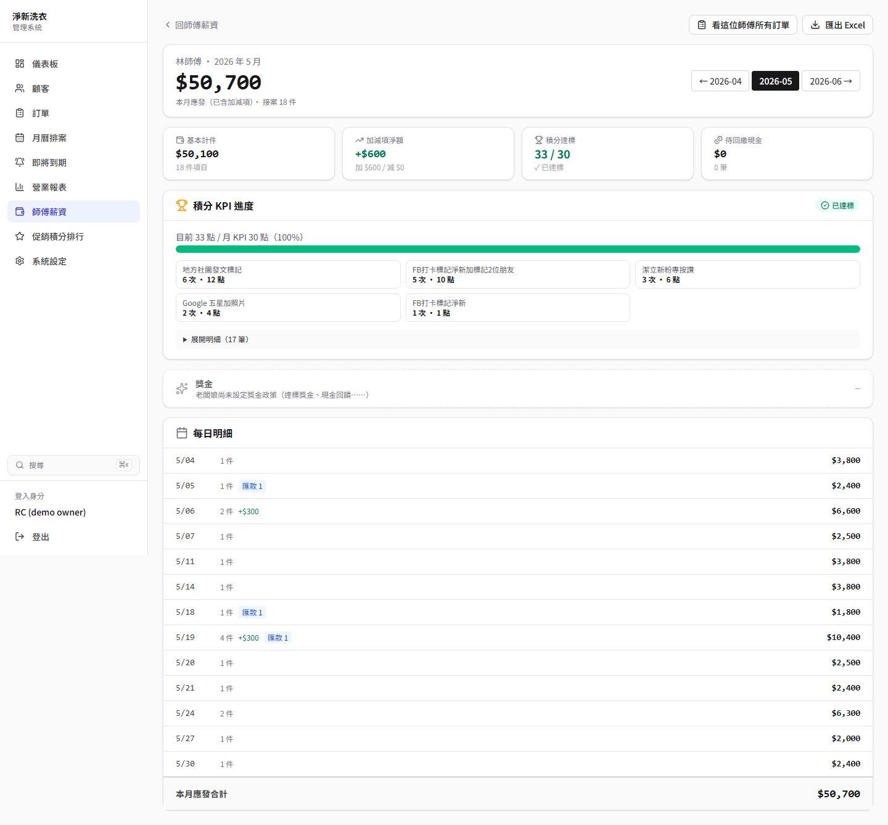
師傅 C 本月積分 25/30，系統顯示「還差 5 點，本月剩 8 天」。您可以提醒師傅 C：「剩一週了，多請客戶幫忙在 FB 留言或打卡，每筆 1 點，達標可以拿獎金。」
師傅自己也能在手機端 PWA 看自己的進度。
12. 待回繳對帳
師傅收現金後要交回給您。這頁列出所有「已收現金、未交回」的訂單，按師傅分組。
- 右上總額大字顯示，焦慮感降低
- 每組（每位師傅）一張卡，顯示總額 + 筆數
- 每筆訂單前面有 checkbox
- 逐筆「✓ 已回繳」按鈕，現場一筆一筆確認
- 「標記選取為已回繳」批次處理
- 「全部標記已回繳」一次清空
- 每筆可點「查看」進訂單頁，左上「回上頁」自動回到此頁
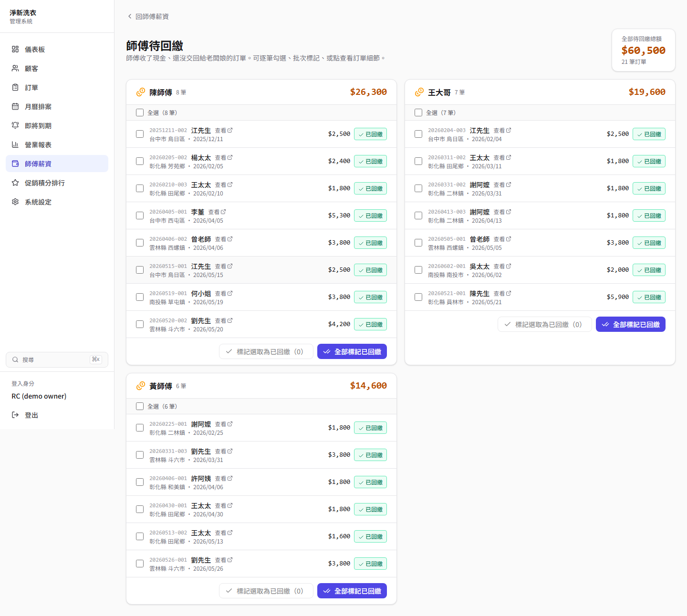
師傅 A 帶 6 筆現金回來。對到第 5 筆發現金額對不上，您點該筆「查看」進訂單頁確認金額，發現是有加減項漏記，回來這頁勾選其他 5 筆按「標記選取為已回繳」，先把對得起來的清掉，第 6 筆暫不勾，等師傅明天說明後再處理。
13. 營業報表
本月/上月/全年/自訂日期區間，看：
- 總營業額、平均單價、案件數
- 狀態分布（待派工 / 已排案 / 已完成 / 已取消）
- 收款方式分布
- 客戶來源分析（LINE / Google / Facebook / 跟車 / 老客介紹⋯）
- 匯出 CSV 用於記帳或報稅
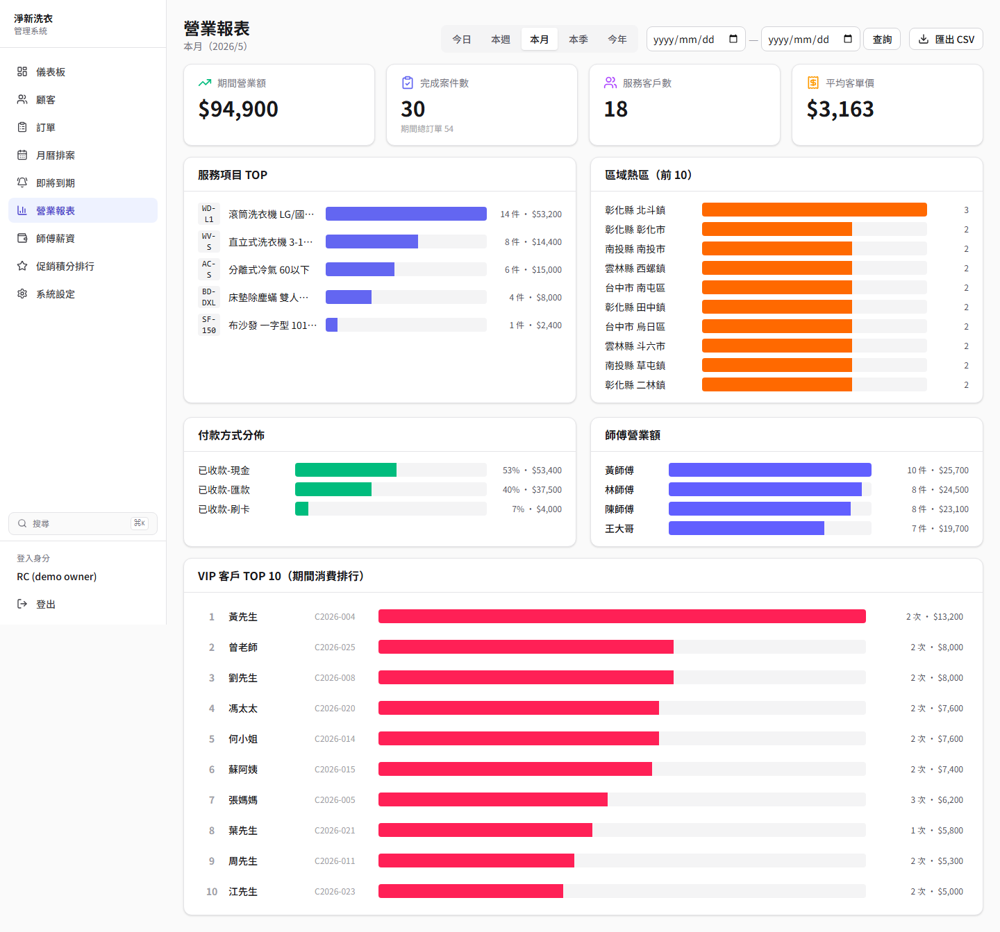
14. 即將到期客戶
系統自動找出上次服務在 11-13 個月前、之後沒再聯絡的客戶（洗衣機通常 1 年清一次）。
- 每張卡顯示客戶名、電話、上次服務日、機器型號
- 一鍵複製 LINE 訊息模板（含問候 + 客戶姓名 + 上次服務日）
- 標記為「已聯絡」，下個月不再出現
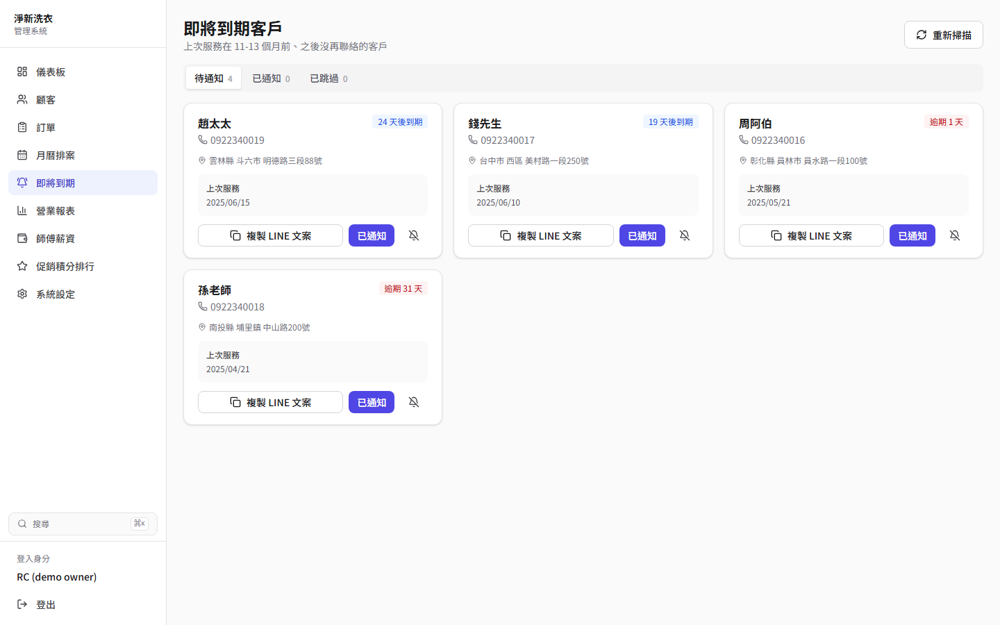
4 月底打開系統，看到 12 位客戶在去年 5 月前後做過、現在快滿一年。您點「複製訊息」貼到 LINE 群發或單發。預估接回 5-6 單，多接 NT$ 10,000+。
以前這 12 位客戶可能就被遺忘，他們也就找別家了。
15. 促銷積分榜（師傅 KPI）
師傅請客戶在每筆訂單做的促銷動作（FB 按讚/留言/打卡/Google 5 星/在地社團發文⋯）會累積積分。
- 9 種促銷類型，每種 1-2 點
- 月 KPI 預設 30 點（可在設定調整）
- 排行榜 + 進度條 + 達標 chip
- 各類型本月次數統計
- 達標可給獎金（待您決定政策）
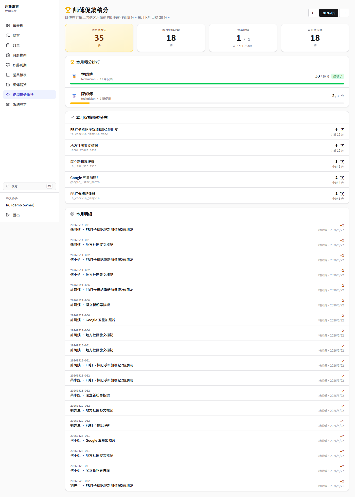
16. 系統設定
主檔資料維護，全部由您決定，不必每次都麻煩工程師。
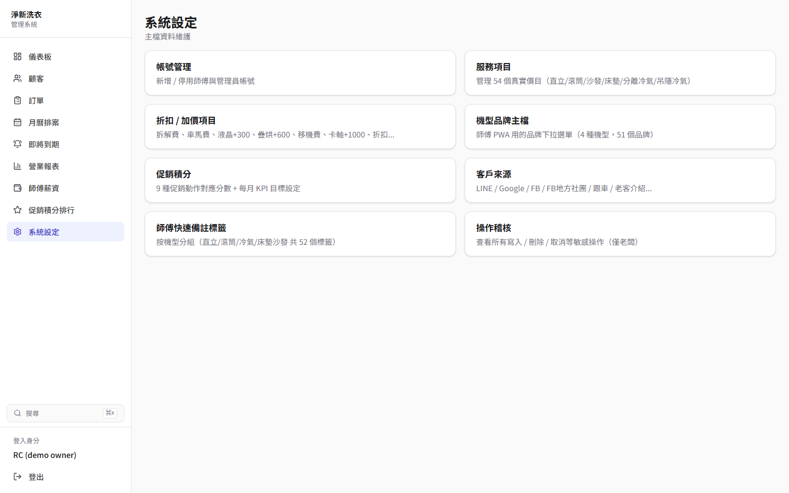
16.1 服務項目主檔
所有可賣的服務（直立洗衣機 3-17kg、滾筒洗衣機 各容量、冷氣、床墊、沙發、加大、車馬費⋯⋯約 54 項），可改名、改價、新增、停用。
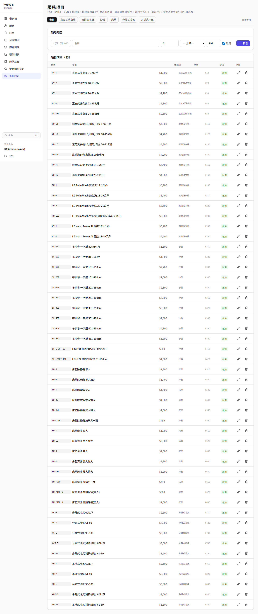
16.2 機器品牌主檔
建單時客戶機器的品牌下拉選項（LG、大同、Daikin、國際⋯⋯），可自由維護。
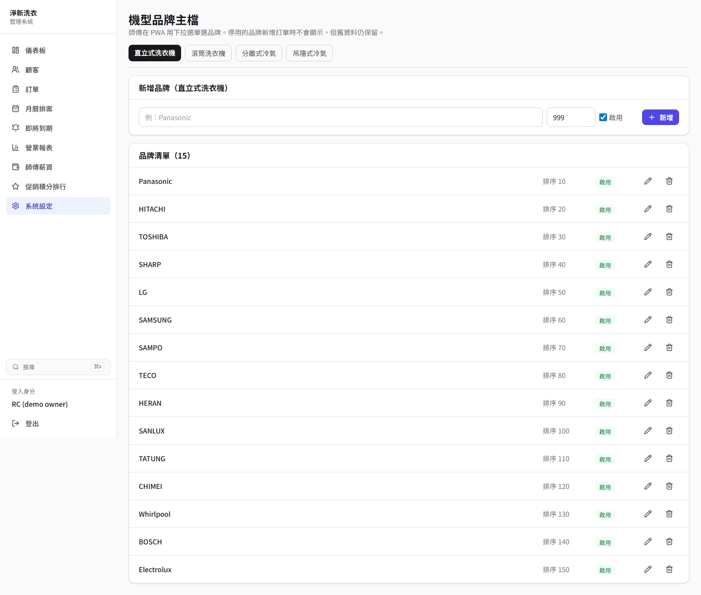
16.3 促銷積分類型
9 種促銷動作 + 每種點數，可改點數、停用、調整月 KPI 門檻。
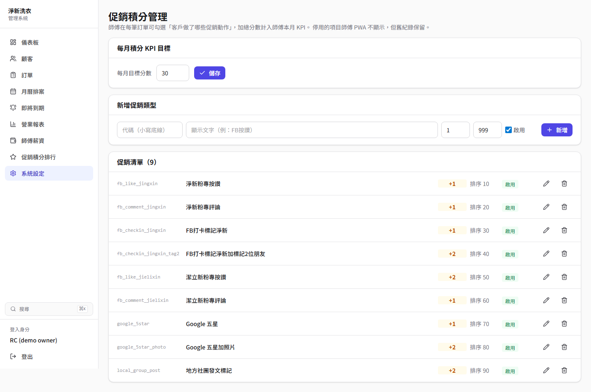
16.4 帳號管理
新建師傅/管理員帳號，預設密碼 admin1234，請告知對方登入後自行更改。也可停用離職師傅帳號（不刪除歷史資料）。
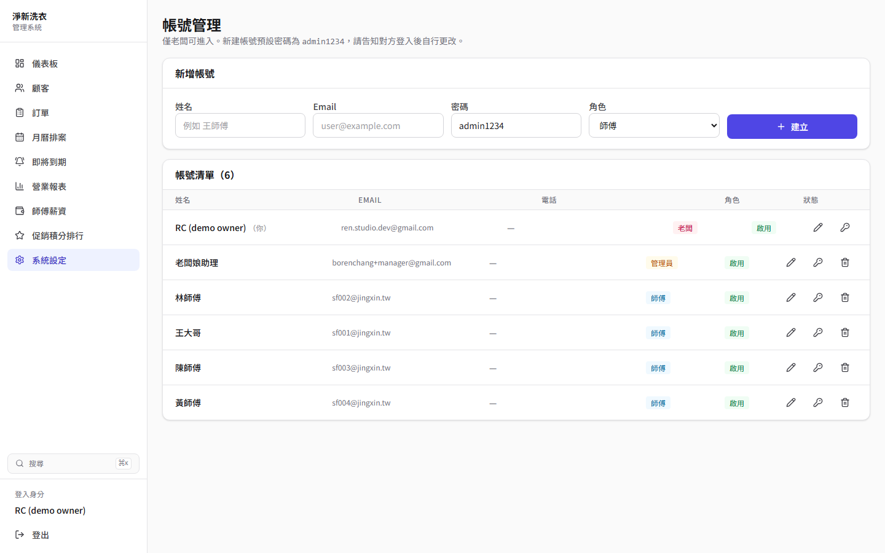
16.5 操作稽核紀錄
記錄系統內所有寫入/刪除/取消等敏感操作，避免有爭議時無法回溯。
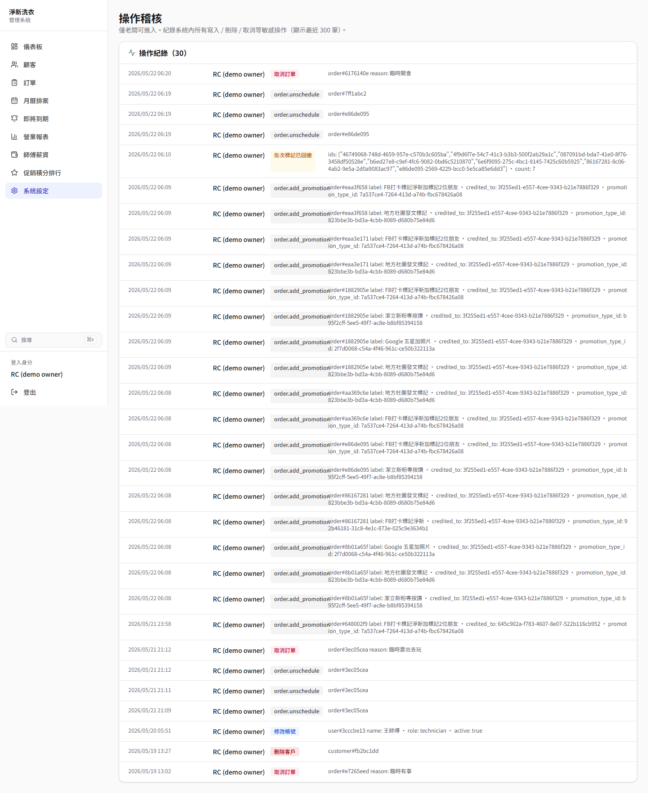
17. 師傅手機端（PWA）
師傅用手機開系統，可加到主畫面當 App 用（不用裝原生 App，省成本）。
- 只看自己今日案件，依時段排列
- 到場後點開訂單可看客戶資訊（電話可直撥）、地址、機器
- 現場可加減項（加大、其他加價、折扣）
- 完工按「標記完成」自動勾選促銷類型 + 寫現場備註
- 選收款方式（現金/匯款/刷卡/LINE Pay）
- 個人薪資頁可看自己本月積分、待回繳
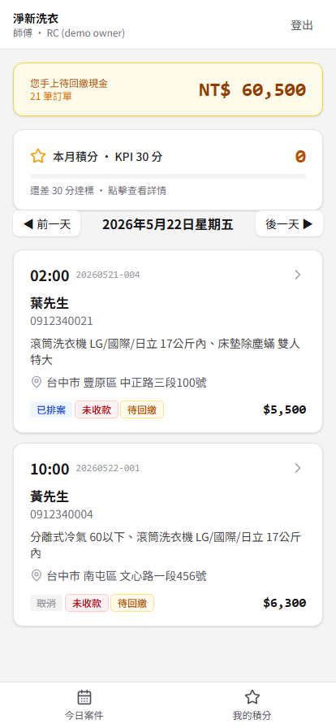
師傅小李上門前在車上開手機看訂單頁，看到客戶今天有 1 台直立洗衣機。完工後現場按「標記完成」+ 勾選「請客戶 Google 5 星 + 照片」+ 收 NT$ 1,800 現金。
回到家手機按一下，今日 4 單全部結案，下班。
您在電腦端立即看到 4 單已完成、4 筆現金待回繳，明天他來時收錢按「全部標記」結案。
結語：這個系統替您省了什麼
| 每月省下的時間 | 原本花在哪 |
|---|---|
| ~ 4 小時 | 計件薪資手算 + 對帳 |
| ~ 2 小時 | 找客戶歷史紀錄 |
| ~ 2 小時 | 整理到期客戶名單 |
| ~ 3 小時 | 排班、改派、撞時間協調 |
| ~ 1 小時 | 本月營業統計報表 |
| 合計 ~ 12 小時 / 月 | = 多 1.5 個工作天可以做更有價值的事 |
系統未來可加：客戶自助查歷史頁、LINE Bot 自動回覆預約、自動發 SMS 到期提醒、案件照片紀錄、舊 Excel 匯入清洗腳本等（接客戶現有服務商）。